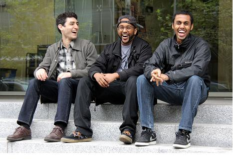

By Edith Nataprawira
Uploaded on September 29, 2013
It's been one year since the birth of the Beaudifulhors, a five-man band of eclectic tastes united by a singular passion for music.
Having heard samples of their songs on Soundcloud, it was difficult to define exactly what I was listening to. There were elements of Rap, Funk, and Groove in their music, but also hints of Jazz, Blues, and Rock. Listening to them was a bit like trying my hand at a game of chance—I wouldn't know what I was getting until I hit play—and while not all of their songs agreed with me, there was enough variety that some of their songs definitely did.
Band members Fithawi, Mohammed, Sean, Ishan and Balazs had all been involved in music individually, but it was thanks to the intervention of another band called Seed of Nature that the five young men were brought together. The result was an alchemic "melting pot of musical delicacies": the strange chimera known as the Beaudifulhors.
"But what's with the name?" I asked, and got a few laughs.
Apparently a "beautiful horse" was something that Ishan had mentioned while freestyle rapping one day, and Rohit (the lead singer of the aforementioned Seed of Nature) overheard and suggested it as a band name. "He also suggested the spelling and when we looked up 'Hors' it turned out to be the name for the Slavic sun god," Mohammed, the lead rapper, told me. "That's when we knew we had to stick with it."
It was a case of celestial serendipity. They hadn't seriously searched for a band name before that.
"Names don't really matter for us," Mohammed confessed, "but we're starting to realize it matters for other people."
That was a bit of a challenge for them—what would they say when someone asked what kind of music they made? As a band that had transcended beyond traditional genre classification, they needed to work harder to explain themselves.
But just listen. The core of their identity is easily understandable. Just ask, why do the members of the Beaudifulhors play together?
Sean answered: "When you play music with other people, something happens. We're always looking for people to jam with."
"Different tastes make things interesting," Fithawi added.
|  | That seemed to be the crux of it: the spirit of collaboration and the energy of mutual inspiration. They would meet, jam, and record what they played. Sometimes, they started with a concept or a sound and if they liked what they heard, they built onto it. It seemed to be a very organic way of making music—one that wasn't defined by genre or centred on any one of them in particular, but rather on what they could create together. They were connecting with people and having fun, which is a philosophy that carries over to their live performances. "If it looks like you're enjoying it, the people will enjoy it too," Mohammed explains. |
Spotlight Editor in Chief
Vjosa Isai
vjosa.isai@ryerson.ca
Want to get your time under the lights? Are you a writer looking to join the Artist Spotlight initiative? E-mail us at music@ryerson.ca to see how!